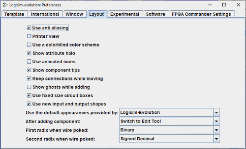

הכרטיסייה פריסה

כרטיסייה זו כוללת העדפות המשפיעות על ההתנהגות של עורך פריסת המעגלים.
-
השתמש ב-anti-aliasing: מפעיל את אפקט ה-anti-aliasing של הכרטיס הגרפי. יופיעו רצועות חלק יותר על המסך או בהדפסה.
- משתמש בסכמת צבעים עיוורת צבעים צבעי החוטים ישתנו כדי להתאים לאנשים עם צבע קשיי תפיסה.
-
הצג הילה של תכונה: מציין אם לצייר את הסגלגל הצהבהב הבהיר סביב הרכיב או הכלי שהתכונות שלו מוצגות כעת בטבלת התכונות.

- משתמש בסמלים מונפשים
-
הצג טיפים לרכיבים: מציין אם להציג את "טיפים לכלי עבודה" שיופיעו באופן זמני כאשר העכבר מרחף מעל רכיבים התומכים בהם. לדוגמה, אם אתה מרחף מעל תת-מעגל הסיכה של הרכיב, היא תציג את התווית של הסיכה המתאימה בתוך תת-המעגל. מרחפת מעל אחד הקצוות של מפצל יגיד לך את הביטים שאליהם קצה זה מתאים. בנוסף, כל רכיבים בספריות Plexers, Arithmetic ו-Memory יספקו מידע על הקלט שלהם ותפוקות באמצעות טיפים.
-
שמור על חיבורים תוך כדי תנועה: מציין אם Logisim צריכה להוסיף חוטים חדשים כאשר רכיבים נמצאים עברו לשמר את הקשרים ביניהם. כברירת מחדל זה מופעל - אם כי ניתן לכבות אותו באופן זמני על ידי לחיצה על מקש shift בזמן הזזת הרכיבים. אם תיבה זו אינה מסומנת, אז ברירת המחדל תהיה לא להוסיף חוטים במהלך מהלך - אם כי אתה יכול להפעיל אותו באופן זמני על ידי לחיצה מקש shift במהלך ההעברה.
-
הצג רוחות רפאים בזמן הוספה: כאשר מסומן, וכאשר נבחר כלי להוספת רכיב חדש, קו מתאר אפור בהיר של רכיב שיש להוסיף מצויר כאשר העכבר נע על פני הקנבס. ל לדוגמה, אם תבחר בכלי AND gate ותזיז את העכבר לתוך החלון (מבלי ללחוץ על לחצן העכבר), קו מתאר אפור של שער AND יציג היכן יופיע שער AND כאשר לוחצים על העכבר.
- השתמש בקופסאות מעגלים בגודל קבוע: מראה ברירת המחדל של מעגלי המשנה ב-Logisim-Evolution חדש יוצעו פרויקטים בגודל סטנדרטי ואם לא יותאמו לפי המעגל. זה גם ניתן לעשות זאת על בסיס כל מקרה לגופו עם הרכוש של תת-המעגלים. השתמש גודל קופסא קבוע
-
השתמש בסמלי הקלט והפלט החדשים: סמלי הקלט והפלט החדשים ישמשו
 אם התיבה היא
מסומן, אחרת ייעשה שימוש בסמלי הקלט והפלט של Logisim- Classique
אם התיבה היא
מסומן, אחרת ייעשה שימוש בסמלי הקלט והפלט של Logisim- Classique 
 . חלון קופץ ישאל אותך
האם עליך להמיר אותם לתרשים המעגל הנוכחי.
. חלון קופץ ישאל אותך
האם עליך להמיר אותם לתרשים המעגל הנוכחי.
- השתמש במראה ברירת המחדל המסופק על ידי: המראה של מעגלים מסוימים, למשל זיכרונות, יוצע על פי גרסאות הלוגיסיזם:Logisim- Classique, Logisim-HolyCross ,לוגיסים-אבולוציה
-
לאחר הוספת רכיב: כברירת מחדל, לאחר הוספת כל רכיב בודד, Logisim עוברת חזרה לכלי העריכה כדי לאפשר לך להזיז רכיבים ולהוסיף חוטים. התיבה הנפתחת מאפשרת לך לשנות התנהגות זו כך ש-Logisim יישאר באותו כלי להוספת עוד מאותו רכיב, עד שאתה בעצמך בוחר לבחור בכלי העריכה. (זו הייתה התנהגות ברירת המחדל של Logisim לפני Logisim 2.3.0. אמנם יותר אינטואיטיבי, אבל התנהגות זו דורשת יותר תנועת עכבר כדי לעבור בין כלים.)
-
רדיוס ראשון כאשר חוט ניקור: מגדיר כיצד ערכים מוצגים כאשר לוחצים על חוט באמצעות כלי לתקוע. לחיצה על חוט מציגה זמנית את הערך, ונשארת עד שהמשתמש ילחץ במקום אחר המעגל.

-
רדיוס שני כאשר חוט תקוע: מגדיר את החלק השני של אופן הצגת ערכי החוט.